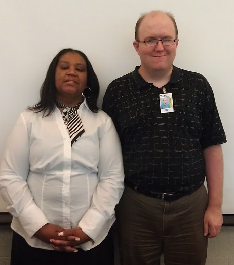

Justin's Teaching Portfolio
Schedule tutoring with Justin!

Credentials
- Justin has a Master's of Science in Biology from Western Michigan University. He completed research on the influence of cardenolide chemical defense in milkweeds on the predator/prey relationship between the oleander aphid and ladybugs.
- Justin has a Bachelor of Science in Biology and in Chemistry from Winthrop University.
- He is also a certified secondary school teacher in Michigan. Justin was awarded a $30,000 scholarship by the Woodrow Wilson National Fellowship Foundation to become a certified science teacher and teach for 3 years in high needs schools. Justin has endorsements to teach grades 6-12 in any Biology or Chemistry subject area (DA and DC endorsement).
Experience
Justin has...
- taught 10 semester of college courses in Organismal Biology and Ecology.
- taught 4 years in grades 6-12 including classes in Biology, Chemistry, Environmental Science, Astronomy, Algebra, and Geometry.
- numerous experience with 1:1 tutoring with students, including as an online technical coach with Flatiron School and as a volunteer tutor helping students earn their GED. Justin tutors both in person and in remote video conferencing using the free video software Zoom.
Justin's statement of teaching philosophy
"As a teacher I identify a student's current level of development and create teachable moments and a learning environment to expand that level of development as much as possible. I adhere to the following principles in doing so:"
- Listening first, and only later being heard: I make sure I understand a student as an individual and where they are at in their current ability level before I launch into teaching.
- Model-coach-fade: I show students best techniques, then do it with them, then gradually fade so that they can do it independently. I never do for a student what they can do themselves.
- Growth mindset: I do not believe in "constructive criticism" as this has a negative connotation. Instead, I identify "opportunities for improvement." The focus on lessons is honing one's knowledge and craft, not in proving oneself smart.
- Clearly measurable goals: my teaching mimics my programming and science research. I use test-driven development and teaching to ensure students are achieving goals and improving. By "test" I simply mean any good measure of a student's skill and knowledge. Having them talk a concept through can be considered a test. So this is not meant to be stressful, for those with test anxiety! I have found that it is crucial that students and teachers hold themselves accountable and always test themselvs to see how they are progressing.
- Deep learning: I believe that deep learning requires deep thinking. And deep thinking requires a developed abiity to concentrate for long periods of time and engage in metacognition. Metacognition is the ability to think about thinking, and to identify one's own thought patterns. I help students develop this ability.